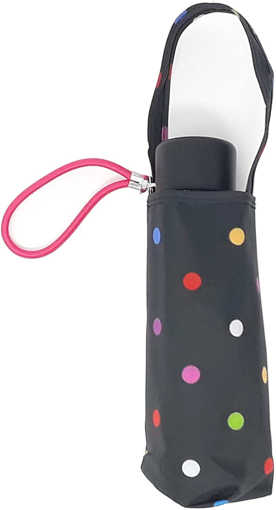

主頁
分類
介紹
影片
聯絡電話：0800-000-000
信箱：NoOne@Will.answer.com
信箱：NoOne@Will.answer.com

| 下列四種雨傘，你比較常用哪種？ | |
|---|---|
| 透明的塑膠傘 | 樸素的長傘 |
有圖案的長傘
| 折疊傘  |
選擇A透明的塑膠傘的你：被害妄想度僅有5％。
你是個不太在乎他人看法，同時也不容易懷疑他人的性格，自然內心不容易出現被害妄想。
而透明的塑膠傘雖然便宜，但要遮雨確實也已經夠用了，更反映出你不追求虛榮，能用樂觀的態度面對事物。
回主頁
其他測驗
選擇B樸素的長傘的你：被害妄想度有30％。
你是個碰到任何事情，都能夠冷靜下來分析狀況，採取適當行動的人。
因此你也不會隨時把抱怨掛在口中，也不會嫉妒他人的好，而是會專注於思考自己該怎麼做，才能夠達到心目中理想的成果。
回主頁
其他測驗
選擇C有圖案的長傘的你：被害妄想度來到75％。
選擇有圖案的雨傘，正反映出你本身是個沒有自信的人。
在虛榮心的作祟下，企圖以華麗的外表來掩飾自我，為的也是避免遭致他人批評。然而不是每個人都像你想的那麼糟，需要自己放開心胸，才能更瞭解其他人是怎麼想的。
回主頁
其他測驗
選擇D折疊傘的你：被害妄想度高達90％。
包包內放著折疊傘，代表無論何時會下雨，你都不需要擔心避雨的問題。
然而這也反映出你的內心，一直都處在高度警戒的狀態，對任何事物都不抱信任，所以才會時時刻刻武裝自己，並對周圍的人保持戒心，深怕意外隨時會發生。
回主頁
其他測驗